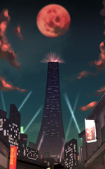

- Welcome to Touhou Wiki!
- Please register to edit. For assistance, check in with our Discord server or IRC channel.
Twilight Bar Room
Twilight Bar Room Twilight Bar-room, Twilight Bar, Twilight Pub | |
|---|---|
|
 The Twilight Bar Room, as seen in Uwabami Breakers Title Screen.
| |
| Location |
Somewhere within the outside world in Japan |
| Residents |
|
Appearances | |
| Official Games | |
| |
- Note: This article is part of the game Uwabami Breakers by the Doujin circle The Drinking Party.
The Twilight Bar Room (黄昏酒場 Tasogare sakaba, also translated as Twilight Bar-room, Twilight Bar or Twilight Pub) is where all of Uwabami Breakers take place. Apart from this game, nothing else official in existence has made reference to this place. The name also appears as the Japanese title of the game.
General Infornation[edit]
It's a mysterious place when you get really drunk, as you usually find yourself flying around the place dodging bullets from food and drinks (drunkenly, of course). It's even said that you can see an illusionary world by morning. Unfortunately, people would usually get a hangover by then as they won't remember a single thing they seen or did.
Geography and people[edit]
The Twilight Bar Room is a skyscraper that isn't located in Gensokyo, but judging on Tatsumi's profile about joining the SDF[1], it's in the outside world in Japan. Its whereabouts is unknown, but ZUN calls it "a mysterious land where only drunkards live."[1] Based on the stage titles of the game: there's a public house called the "Eight-headed Orochi" (八岐大蛇 Taishū izakaya "yamatano'orochi"); "Bar C2H5OH", which means "Ethanol" and it's a place of night-time social life; and "Saturday Night Garden" (サタデーナイトガーデン satadēnaitogāden), which is on the rooftop of the bar.
Many people go to the bar to drink heavily till dawn and can become obsessed with the food sold there, as there are new menus daily. The bar is owned by Rumi Arie who abuses her customers when they don't pay their tabs. She also supervises on her two employees: Tatsumi Hakkaisan, who is the chef that cooks there; and Amakasu Barley Tenji, who works as a bartender and does some disco dancing there.[1] Isami Asama is seen drinking daily at the Twilight Bar Room.
References[edit]
Official Sources[edit]
<toggledisplay showtext="Show sources" hidetext="Hide sources">
- 2007/12/29 Uwabami Breakers
</toggledisplay>